Following our annual tradition, Micah and I had a fantastic father-son backpacking trip in California’s Sierra Nevada. Of course, we missed Jacob, especially when we saw the lakes full of big fat trout. Throughout the trip, we enjoyed beautiful weather. The highs were in the 70s, lows in the 50s. We looked up to brilliant blue skies. True to the idea of wilderness, we saw few people once the weekend ended (Our trip was from Sunday to Wednesday).
We parked at Wright’s Lake, west of Lake Tahoe and north of Highway 50. We started at 7000 feet and had only a 3 mile distance to our campsite. But it was 1600 feet up, a lot of rocky stair climbing!
We were rewarded: we were the only people camping at Hemlock Lake, which was one of the quietest places I’ve ever been. Also, the cover photo at the top was taken right next to our tent at Hemlock Lake.
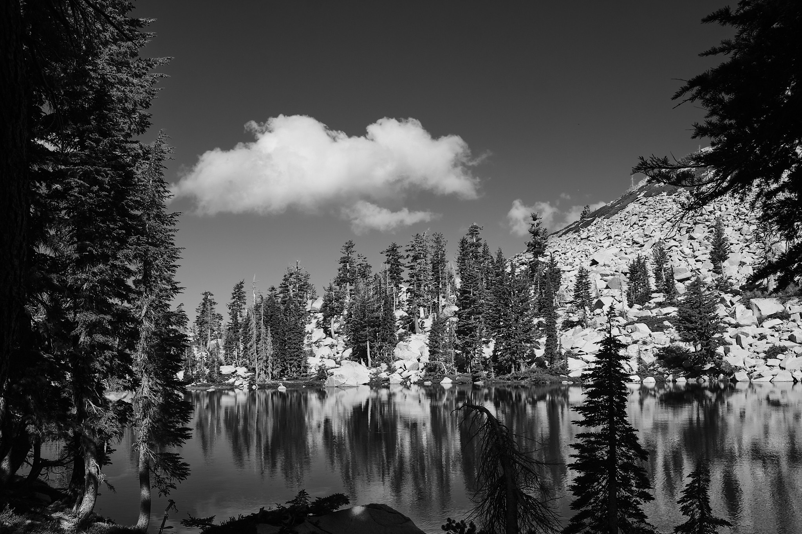
After setting up camp and recovering from the initial climb, I decided to go up another half mile to see the end of the trail, Smith Lake. Here you can see how the Desolation Wilderness got its name. It’s very rocky and crumbly. Not many meadows.
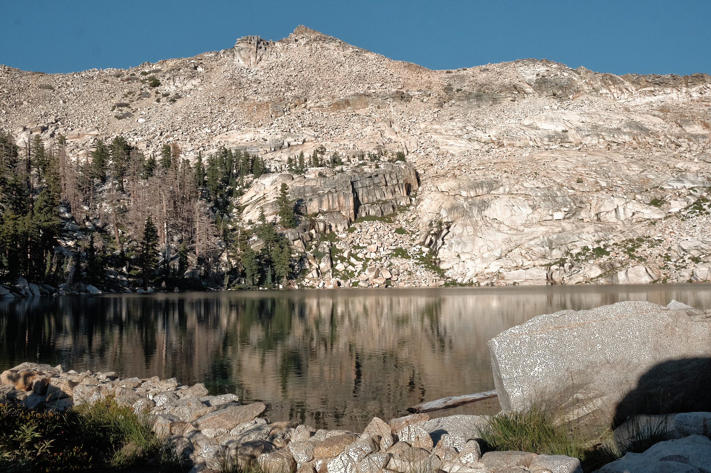
Our permit required us to take the Smith Lake arm of the trail first, but our eventual destination was Twin Lakes, on the other arm of the trail. After a leisurely breakfast and camp breakdown, we went back down the trail. The day before I had been tired when we arrived at camp. When I saw how many steps we had climbed up the day before, I no longer felt “I must be old.”
At a “Y” in the trail, we switched to the Twin Lakes trail and again began to climb, but not as steeply this time. After an hour of hiking we were rewarded. Twin Lakes was a stunning playground for the gods of granite!
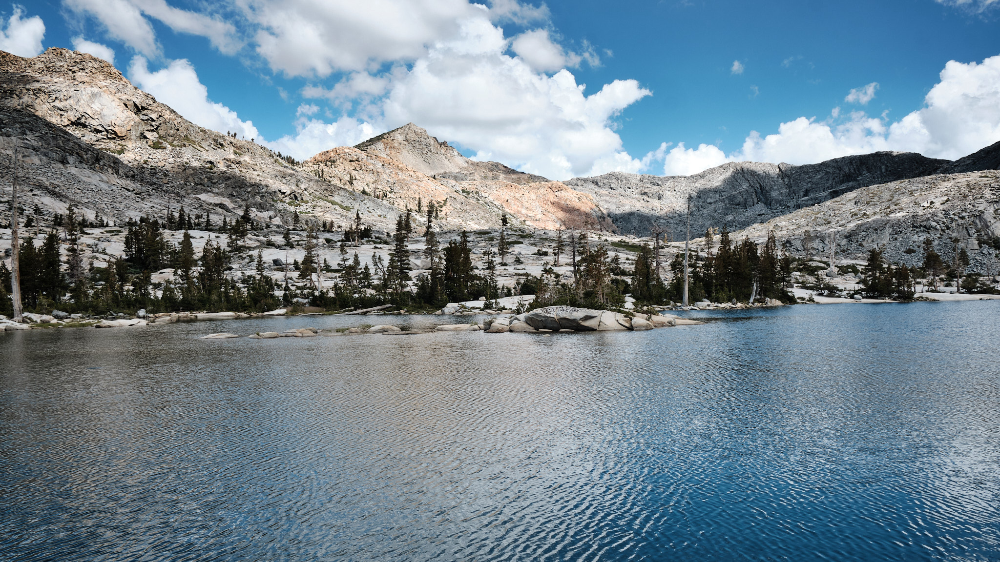
Micah scampered ahead in search of a campsite near one of the two connected lakes. Meanwhile I lumbered over the hump between the lakes. When I got to the other side, I saw a campsite nestled between a boulder and tall pines, with the lake’s end to itself. I thought to myself, “if I was Micah, I’d pick that campsite.” But I called out and there was no response, so I started to wrap back towards the start of the lake in search of Micah. Soon I found him. He had indeed picked that campsite, but had already gone out in search of me!
After setting up our hammocks with the most amazing views of the lake and mountains, we relaxed a bit. Then I went for a stroll along the lake with my camera and discovered the flower garden. A sheltered nook in the rocky shoreline, about the size of a basketball court, must have been a bit more damp then other similar spots. It was filled with brilliant blooms of many colors from pure white to sunshine yellow and including intensive pinks and purples. And it was a butterfly garden, too!
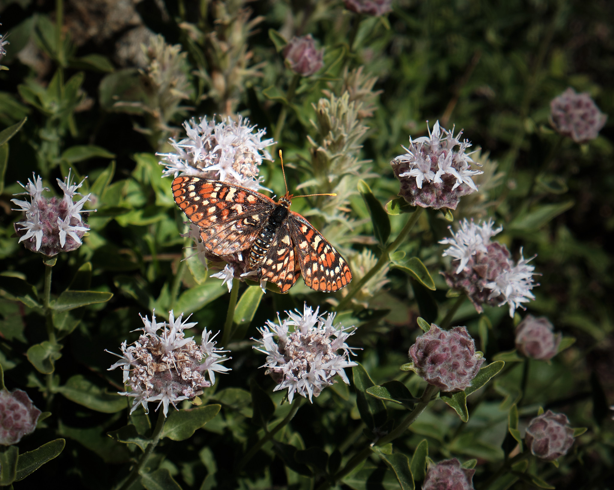
I noticed another fluttering creature in profusion in the garden. Like a mythical beast, it seemed to be half-moth and half-hummingbird, with a long beak, a boxy body, and rapidly beating wings that allowed it to hover. With great patience and many attempts, I got a good photo! Later at home, I identified this creature as a White-Lined Sphinx Moth, Hyles lineata.
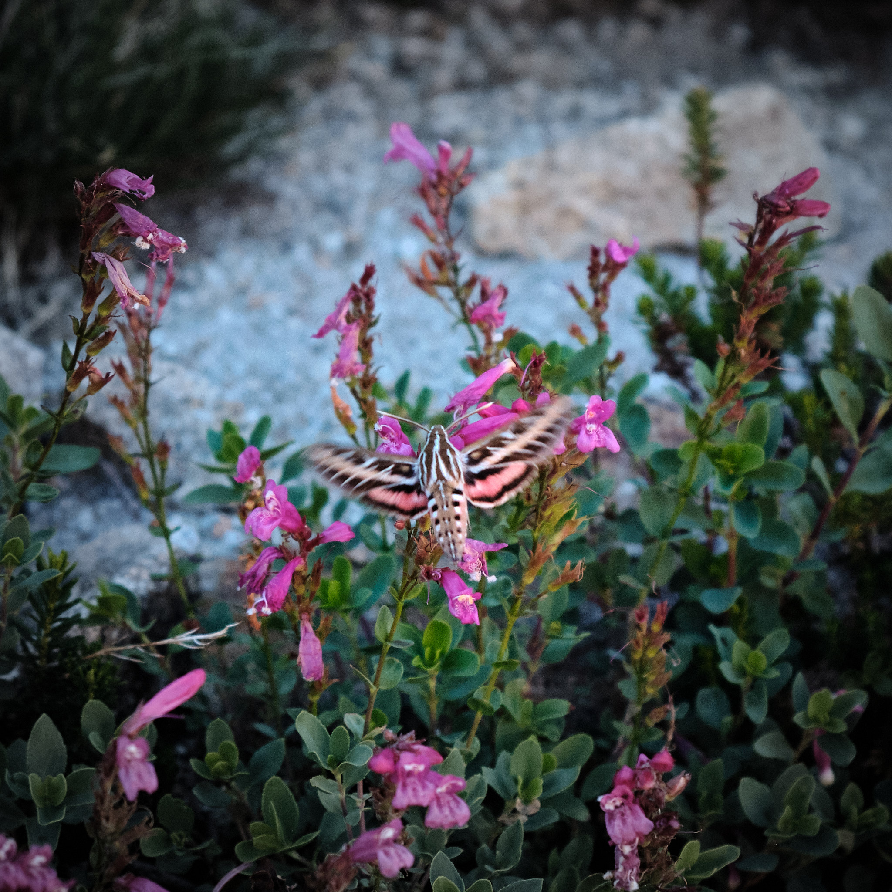
This campsite, too, was very isolated from other people (although there were some other campsites in different spots of Twin Lake). The next day, we enjoyed a lazy morning. Micah didn’t wake up until 9 am. After ample breakfast and hammock time, we decided to take a day hike to the end of the trail, Island Lake.
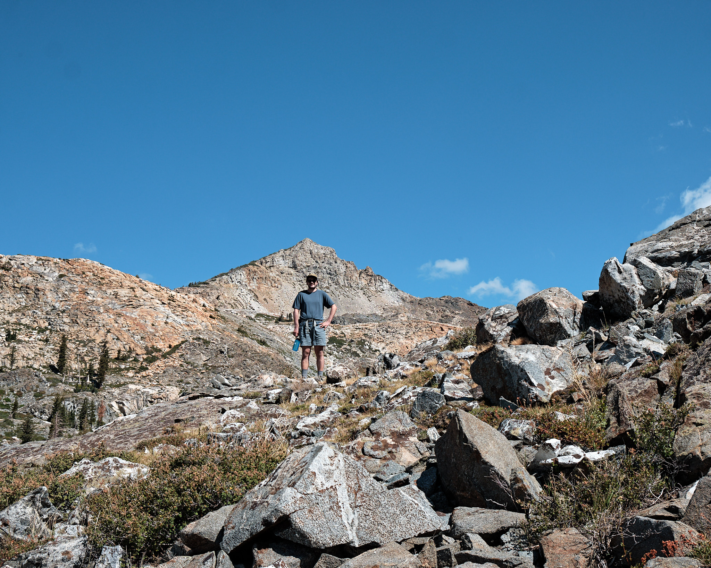
Micah soon spotted a mountain ridge that he wanted to summit. It’s the one at the left of the photo. Micah hikes much faster than me and he is, after all, less than half my age! So I let him enjoy his climb, while I set off in the other direction. Micah shouted out that there was snow just above me, so I went for look. So dramatic seeing the glacier-river of snow and looking up the the mountain slope! I was slowly climbing up those rocks, although it really wasn’t as hard as it may look.
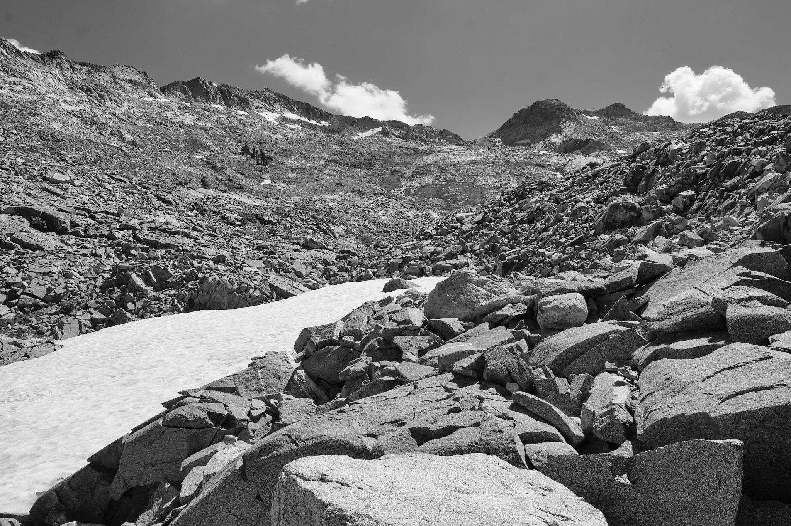
For September, everywhere in the Desolation Wilderness surprisingly wet. There were lots of small ponds of trapped water, called “tarns.” There were many flower gardens where the ground was still damp enough, and from time to time we were traversing muddy trails or stepping on rocks to avoid lightly flooded trails. These are spring conditions, not fall conditions. Due, no doubt, to the very wet and snowy winter this year.
From our camp, we could see a cascade coming down a ridge into Twin Lakes. I climbed to the top of the cascade. A group of young badass hikers were camped there, hooting and hollering as they tried to climb to the top of the pictured mountain. I enjoyed the garden of Eden near their camp in a high mountain valley (approx 8700 feet)
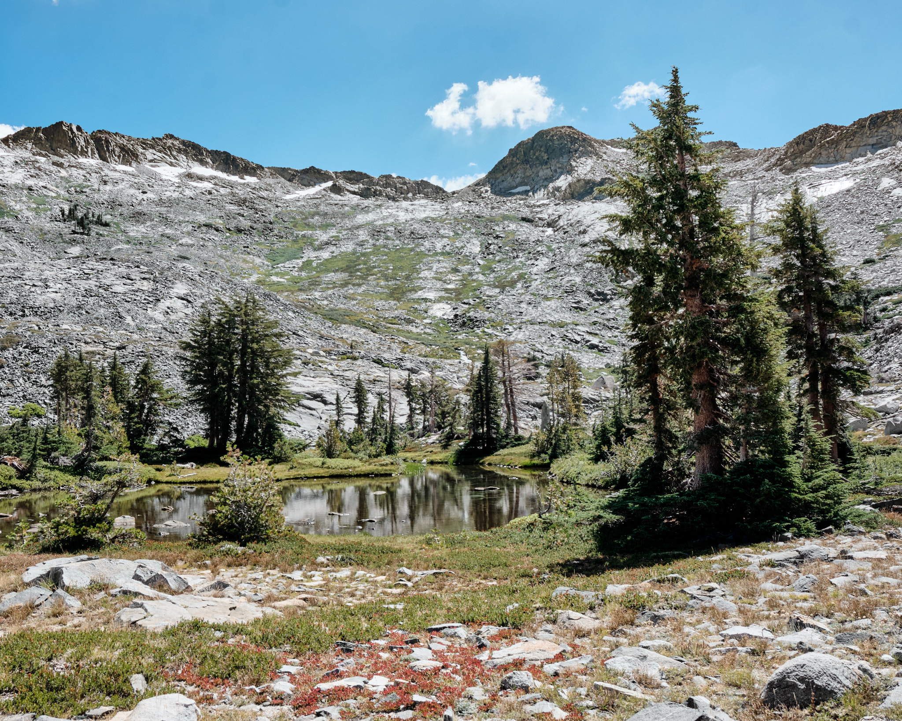
The Sierras are elemental. Granite. Water. Pine. Sky.
Island Lake is a perfect example. I walked down after taking this picture and met Micah at the lakeside for a lunch of crackers, olives, salami and cheese.
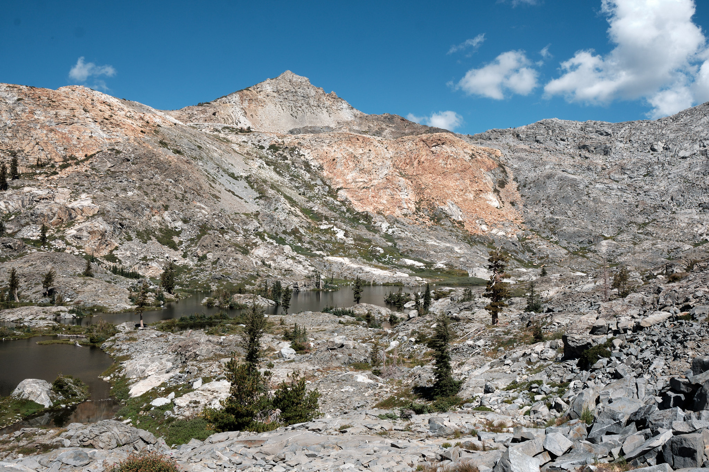
These pink flowers were everywhere on our trip, but I found them to be surprisingly hard to photograph. I finally captured a good one!
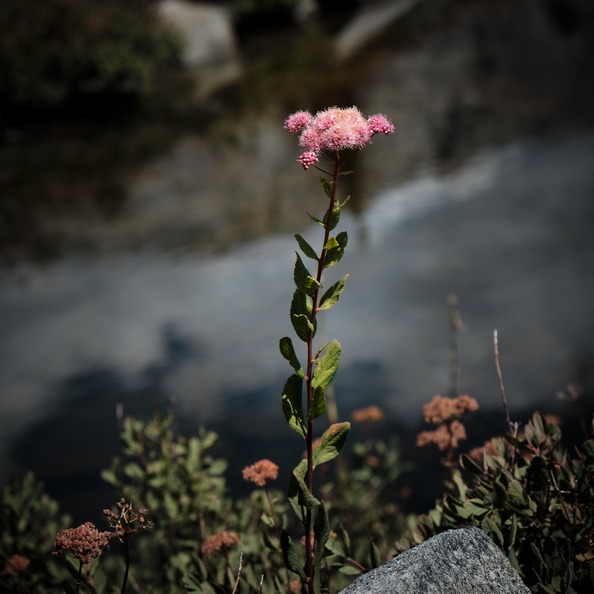
We got back from our day hike in the early afternoon and spent a delightful afternoon in hammocks by Twin Lake in perfect weather. No bugs to worry about, which was great.
That evening the sunset turned the mountains bright orange and pink as we watched the show after our dinner of freeze-dried minestrone soup and freeze-dried beef stew. The orange mountains perfectly reflected in the lake.
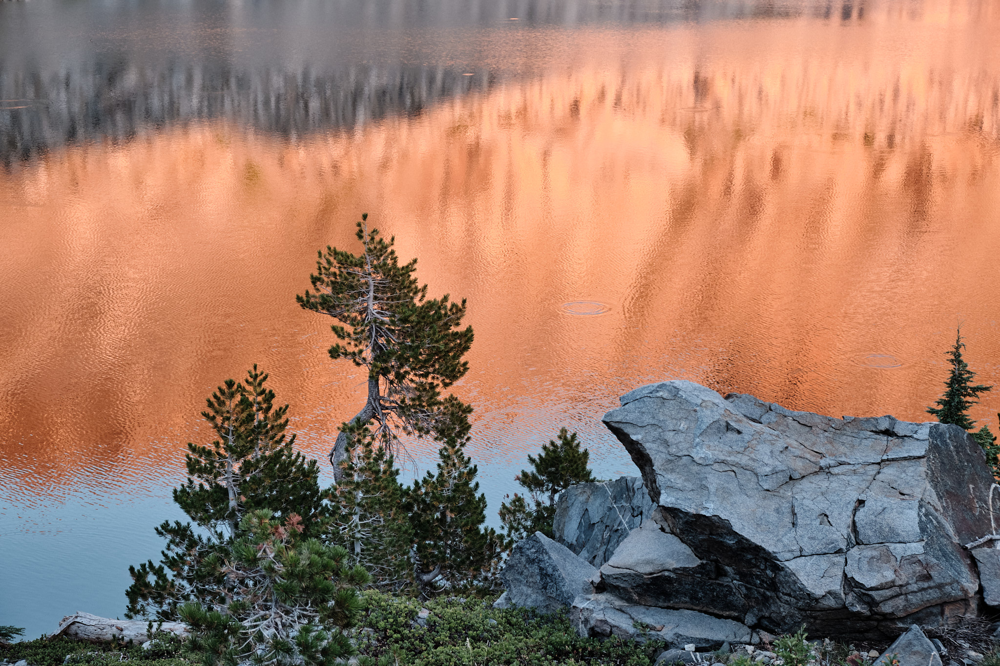
As we were watching this zen-like scene, the bozos from the top of the cascade decided they wanted to go fishing. So they climbed straight down the cascade through huge piles of slippery scree – about 250 feet vertically down. Ridiculously dangerous way to go fishing. The fish showed them a cold shoulder – as they were on the rockiest part of the shoreline, the bugs were elsewhere on the lake and so were the fish!
The next morning it was time to head home. The Desolation Wilderness was terrific. We had wonderful weather, great vistas, plenty of peace and quiet, and a good time together. Here’s Micah leading the way back to Wright’s Lake, out of the rocky High Sierra and back into the woods. Continuing 180 miles in our car in the same direction as the expansive view, we were back home.
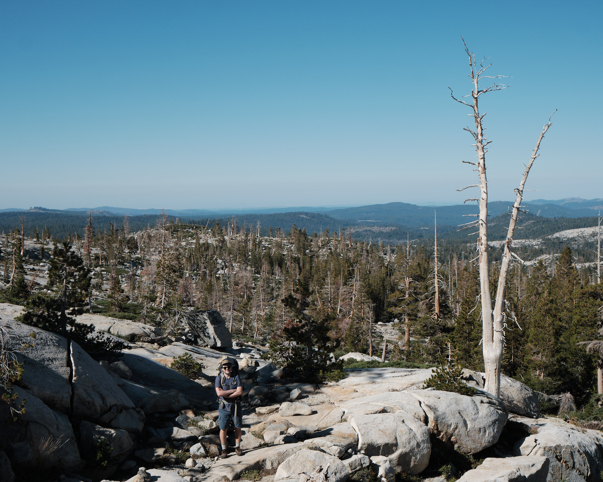